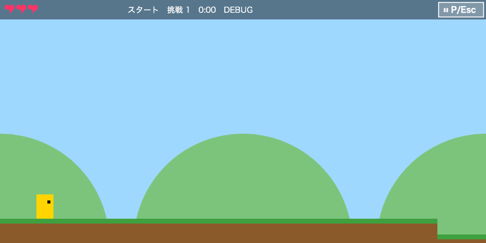
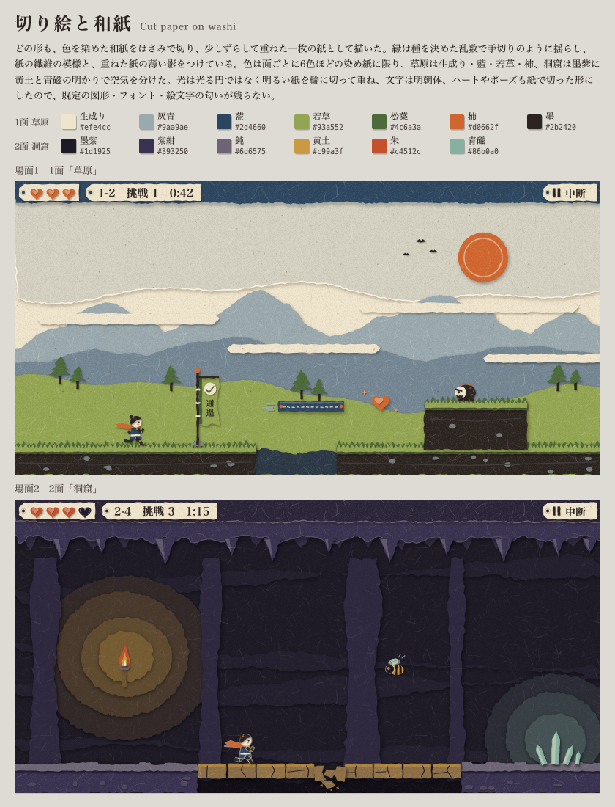
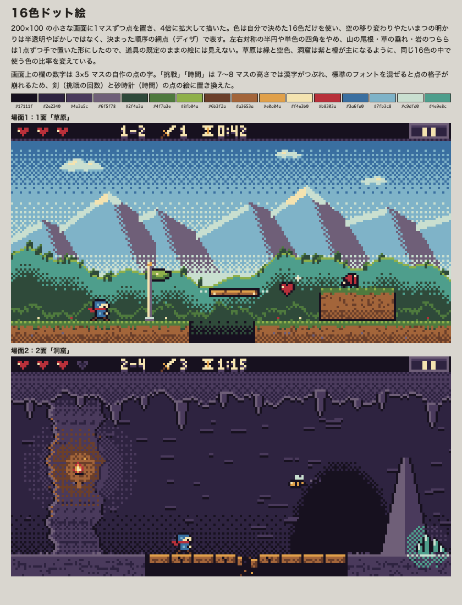
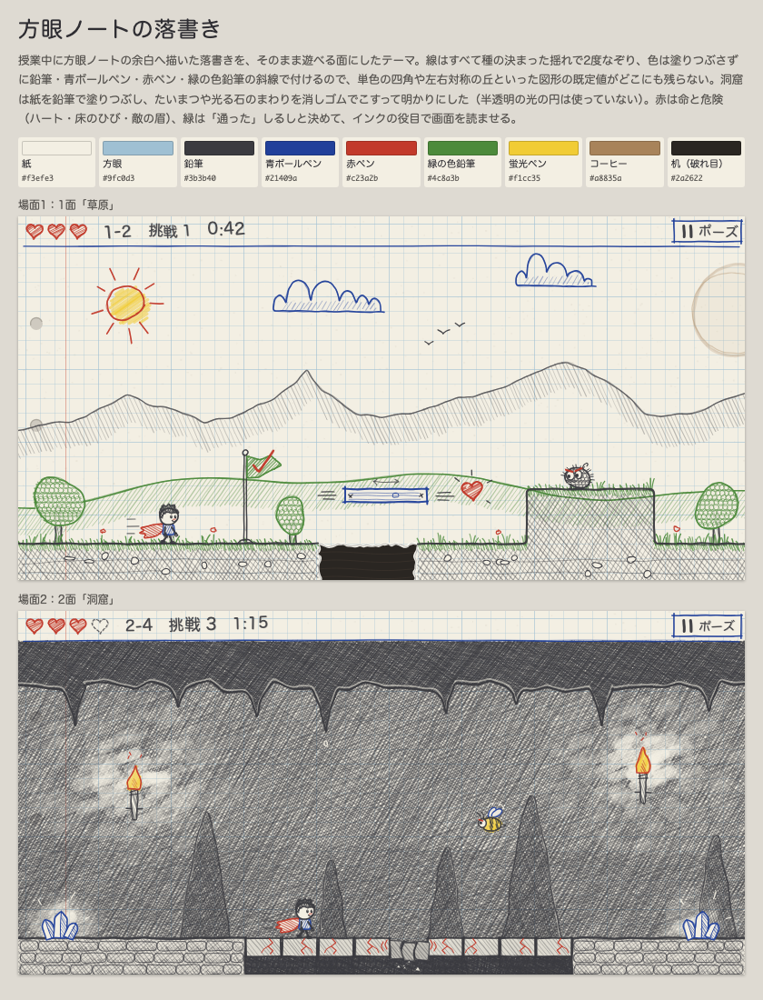
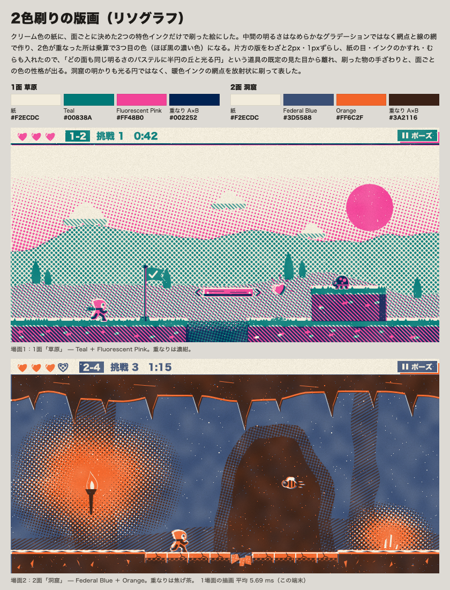

見た目のテーマ比較
今の見た目が「AI が作ったよう」に見えるため、方向の違う4つのテーマで同じ2つの場面（1面「草原」・2面「洞窟」）を描いた。どれも画像ファイルを使わず、ゲームと同じ Canvas のコードで描いているので、選んだテーマをそのままゲームへ移せる。描く場面と決まりは README.md。
今の見た目

| 今の作り | なぜありきたりに見えるか |
|---|---|
| プレイヤー・敵・床が単色の四角 | 仮置きの図形に見える |
| 左右対称の半円の丘と単色の空 | どの面も同じ作りで、場所の空気がない |
| 影・輪郭・光の向き・質感がない | 手で描いた跡がない |
| 効果は半透明の円（glow）だけ | よくある「光らせておけばよい」演出 |
| 標準のゴシック体と絵文字のアイコン | 道具の既定のままに見える |
A. 切り絵と和紙

theme_paper.htmlB. 16色ドット絵

theme_pixel.htmlC. 方眼ノートの落書き

theme_note.htmlD. 2色刷りの版画（リソグラフ）

theme_riso.html比べる
| テーマ | 手で作った感じ | 遊ぶときの読みやすさ（足場と背景の区別） | ゲームへ移す手間 | 気になる点 |
|---|---|---|---|---|
| A. 切り絵と和紙 | 強い。和紙の目・紙の影・切った縁がどこにもある | 高い。足場・人物は輪郭と影で背景から浮く | 中。形ごとに揺れた縁を作るので、面を読み込むときに1回作って使い回す | 人物が小さい。明朝体は Android で別の字体になる |
| B. 16色ドット絵 | 中。よくできているが、ドット絵はよくある選び方 | 高い | 大。描き方を全部 200×100 の点の画面に移し、座標を4の倍数にそろえる。日本語の文字（面の名前・操作の説明）を点の字にするか、例外にする | 「レトロ風」という別のありきたりになりうる |
| C. 方眼ノートの落書き | 強い。線の揺れと斜線 | 草原は高い。洞窟は灰色一色に近く、足場と壁の差が小さい | 中。線を3通り描いておいて切り替える（1フレーム 0.35 ms と測った） | 洞窟の暗い面で読みにくい。丸ゴシックは Apple の端末だけ |
| D. 2色刷りの版画 | 強い。網点と版のずれ | 洞窟は高い。草原は地面と背景の網点が混ざってうるさい | 中〜大。毎フレーム2枚の版を重ねる（1場面 5.7 ms と測った。スマホでは未測定） | 画面がにぎやかで、動きが多いと目が疲れるかもしれない |
私のおすすめは A. 切り絵と和紙。手で作った感じが一番強く、足場と背景の区別もはっきりしていて、今の「文字は日本語（面の名前・ボスの名前・操作の説明）」とも合う。次点は C（洞窟の明暗を強くすれば使える）。